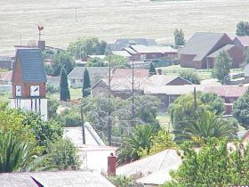

ABOUT LOCAL CHILLAS

Local Chillas is a place in a small town
called BREYTEN in MPUMALANGA. It
was founded by Andiswa as she grew up
there and wanted to make home feel like
home by adding what everyone needed
a, Chillas lounge.
Local Chillas was not only created for
entertainment reasons but for various
reasons that benefit the community of
breyten such as supporting local artists ,
local businesses, safe drinking
enviroments and most importantly job
opportunities.

The mission for Local Chillas is to
provide a safe space for the community
that accomodates everyone and to also
create a welcoming and vibrant space as
well as support the community in every
way possible.
The vision for Local Chillas is to be
recognised nation wide for great service
and,to become the leading community
entertainment hub in breyten and most
importantly for breyten to be recognised.
TARGET AUDIENCE for LOCAL CHILLAS:
Young adults (16-30)
Working adults (18-49)
Sport fans
And most importantly anyone who loves
music , dancing , fun , socialising and
food.